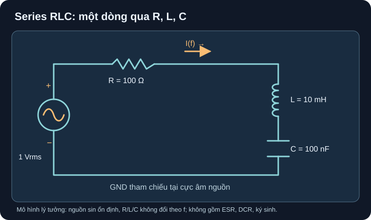

Mạch RLC & Cộng Hưởng
Cộng hưởng là chỗ hai phản kháng triệt nhau trong mô hình; điện áp từng linh kiện vẫn có thể lớn hơn điện áp nguồn.
- Từ sơ đồ series RLC và nguồn sin RMS, tính
XL,XC, độ lớn trở kháng, dòng và dấu pha ở hai phía cộng hưởng. - Tìm
f0, hai tần số nửa công suất và băng thông toàn phần của mô hình RLC nối tiếp lý tưởng. - Lập bảng quét 0,1–20 kHz bằng giấy hoặc bảng tính, kiểm điểm đỉnh và dấu pha; giải thích vì sao điện áp riêng L/C có thể vượt nguồn.
- Nêu các yếu tố linh kiện thực cần kiểm trước khi chuyển từ phép tính AC sang mạch thật.

1 Vrms hình sin ở mỗi tần số; R=100 Ω, L=10 mH, C=100 nF là giả định bài toán. Dòng tham chiếu hướng sang phải qua R; cực dương điện áp nguồn ở phía trên; GND ở cực âm nguồn.Đọc mô tả A14-1
Dòng tham chiếu từ cực trên nguồn sin 1 Vrms đi sang phải qua điện trở 100 Ω, xuống qua cuộn cảm 10 mH, xuống qua tụ 100 nF, theo dây dưới về cực âm nguồn. Đây là một vòng kín; các phần tử mắc nối tiếp, không có nhánh tải ẩn. Hình không biểu diễn board hay linh kiện đã chọn.
1. Từ tần số đến dòng và pha
Đặt ω=2πf. Với phần tử lý tưởng tại trạng thái sin ổn định, XL=ωL (Ω), XC=1/(ωC) (Ω). Ở tần số thấp XC>XL, vòng thiên dung; ở tần số cao XL>XC, vòng thiên cảm. Khi dùng số phức như nhánh M2, Z=R+j(XL−XC). Người học M1 chỉ cần |Z|=√[R²+(XL−XC)²] và Irms=Vrms/|Z|; dấu pha: thiên dung thì dòng sớm áp nguồn, thiên cảm thì dòng trễ. Các công thức và quy ước pha theo OpenStax §15.2, phần Inductors/Capacitors in AC Circuits và §15.3, phương trình trở kháng RLC series.
Để định lượng pha trong nhánh mở rộng: φZ=atan[(XL−XC)/R] là pha của trở kháng/áp nguồn so với dòng, còn pha dòng so với áp nguồn là −φZ. Tránh đọc dấu pha từ đồ thị không ghi rõ đại lượng tham chiếu. Tại cộng hưởng XL=XC, φZ=0, dòng và áp nguồn cùng pha theo mô hình.
2. Ví dụ giải từng bước: đỉnh dòng, điện áp phần tử và băng thông
Với sơ đồ A14-1, R=100 Ω, L=0,010 H, C=100 nF=1×10⁻⁷ F, nguồn 1 Vrms không đổi khi quét, không xét ESR/DCR/ký sinh. OpenStax §15.5, Eq. 15.17–15.19 là nguồn cho f0, hệ số Q và băng thông; §15.3 cho |Z|.
- Cộng hưởng: giải
2πf0L=1/(2πf0C)đượcf0=1/(2π√LC)=5032,92 Hz≈5,03 kHz. Đây là tần số của mô hình, không phải tần số tự cộng hưởng của một tụ/cuộn cảm thật. - Dòng đỉnh: tại
f0, hai phản kháng bằng nhau (≈316,23 Ωmỗi phía) nhưng ngược dấu;|Z|=R=100 Ω, nênImax=1/100=0,010 A=10 mArms. Điện áp RMS trên từng L và C có độ lớnImax·316,23≈3,16 V, dù nguồn là 1 Vrms; hai áp phản kháng đối pha và triệt nhau trong tổng vòng. - Nửa công suất: do công suất trung bình chỉ tiêu trên R,
P=I²R; tại hai điểm nửa công suất,I=Imax/√2≈7,071 mArms, tức|XL−XC|=R. Giải hai phía chof1≈4,300 kHzvàf2≈5,891 kHz. - Băng thông toàn phần:
Δf=f2−f1=R/(2πL)=1591,55 Hz≈1,59 kHz;Q=f0/Δf≈3,16.Δfkhông phải khoảng ±1,59 kHz quanhf0, cũng không phải băng thông bảo đảm của part thật.
3. Hoạt động tái lập: quét bằng bảng tính
Nhập
Vrms=1 V, R=100 Ω, L=0,010 H, C=1E−7 F. Tạo cột tần số từ0,1 kHzđến20 kHz, thêm riêngf1=4299,67 Hz,f0=5032,92 Hz,f2=5891,22 Hz. Dùng lưới dày hơn gần 5 kHz nếu muốn nhìn rõ đỉnh.Cho mỗi f, tính
XL=2·PI()·f·L,XC=1/(2·PI()·f·C),Zmag=SQRT(R²+(XL−XC)²),Irms=Vrms/ZmagvàφZ=DEGREES(ATAN((XL−XC)/R)). Nếu bảng tính cóATAN2, kiểm thứ tự tham số theo phần mềm;ATANmột biến tránh nhầm ở đây vì R dương.Vẽ
Irms(f)vàφZ(f); so các mốc trong bảng. Ởf1,f2, dòng phải xấp xỉ7,071 mA; dưới đỉnhφZ<0(dòng sớm áp), trên đỉnhφZ>0(dòng trễ áp). Kiểmf2−f1≈1591,55 Hz.Nếu có AC simulator, dùng chính vòng topology và giá trị giả định, nguồn AC
1 Vrmstheo quy ước biên độ của simulator, quét 0,1–20 kHz; lưu netlist, phiên bản, đồ thị, kết quả f1/f0/f2 và cách tính RMS. Trang này đưa kết quả giải tích kỳ vọng, chưa báo cáo có bản chạy simulator hay phép đo.
| f | XL | XC | Irms | φZ |
|---|---|---|---|---|
| 0,1 kHz | 6,28 Ω | 15,92 kΩ | 0,0629 mA | −89,6° |
| 1 kHz | 62,83 Ω | 1,592 kΩ | 0,653 mA | −86,3° |
| 5,033 kHz | 316,23 Ω | 316,23 Ω | 10,00 mA | 0° |
| 10 kHz | 628,32 Ω | 159,15 Ω | 2,085 mA | +78,0° |
| 20 kHz | 1,257 kΩ | 79,58 Ω | 0,847 mA | +85,1° |
ADI ADALM2000 “Resonance in RLC Circuits”, phần Procedure là một hoạt động phần cứng thực về quét đáp ứng và tìm cộng hưởng; người học có thể dùng nó để hiểu cách thiết lập phép so sau này. Giá trị ví dụ trang này do giáo trình đặt ra. Không coi biểu đồ lý thuyết là dữ liệu đo của ADI hay của dự án.
Cuộn cảm thật có DCR, thay đổi L theo dòng và tổn hao lõi; tụ có ESR, dung sai, điện áp định mức và ký sinh; nguồn/mạch đo có trở ra/vào. Các hiệu ứng này đổi f0, đỉnh và băng thông. Đặc biệt VL và VC có thể cao hơn Vs ngay cả trong mô hình, nên phải kiểm áp/dòng/nhiệt của đúng mã linh kiện và điều kiện lắp trước khi cấp nguồn. Mô hình ở đây không xử lý quá độ đóng/ngắt, điện áp đầu nguồn lưới, board thực hay chứng nhận đo. Ví dụ datasheet Würth 7687714471, tr. 1–2 cho thấy L, DCR và giới hạn dòng được ghi riêng theo điều kiện, không suy một thông số từ tên “cuộn cảm”.
Giữ vòng và nguồn của hình A14-1, thay C=400 nF trong mô hình lý tưởng. Tính f0, dòng tại f0, băng thông toàn phần và dấu pha φZ ở 1 kHz. So với ví dụ C=100 nF. Có thể kết luận tụ thật 400 nF sẽ cho đúng băng thông đó không?
- Mô hình, 1 điểm: R=100 Ω, L=0,010 H, C=4×10⁻⁷ F, nguồn sin 1 Vrms; chỉ đổi C, giữ R/L không đổi và không có ký sinh.
- Công thức và dấu, 1 điểm:
f0=1/(2π√LC),Imax=Vrms/R,Δf=R/(2πL); tại 1 kHz,XL≈62,83 Ω,XC≈397,89 Ω, nênφZ<0, dòng sớm áp nguồn. - Số và đối chiếu, 1 điểm:
f0≈2516,46 Hz≈2,52 kHz, bằng một nửa vìf0∝1/√C;Imax=10 mArms;Δf≈1591,55 Hz≈1,59 kHzvẫn là băng thông toàn phần trong model vì R/L giữ nguyên. - Miền áp dụng, 1 điểm: không khẳng định cho tụ thật khi ESR, điện dung theo bias/tần số, dung sai và ký sinh ảnh hưởng; phải kiểm áp riêng L/C và giới hạn nguồn/part trước khi chế tạo hoặc đo.